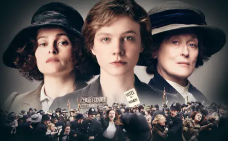

De l’histoire au grand écran

Réalisé par Sarah Gavron et sorti en France le 17 novembre 2015, le film Les Suffragettes retrace la fin de la lutte pour le droit de vote au Royaume-Uni de 1912 à 1913. Porté par une grande prestation de Carey Mulligan, le film nous raconte l’histoire de Maud Watts, devenue suffragette en un sens malgré elle.
Une histoire vraie

Affiche promotionnelle pour le film les Suffragettes
Ce film retrace donc l’histoire de Maud Watts, interprétée par Carey Mulligan, une jeune femme de 24 ans, marié et mère d’un petit garçon. Maud travaille depuis petite dans une blanchisserie et a une vie des plus ordinaire pour cette époque. Mais sa vie va changer lorsque son directeur lui confie la livraison d’un colis. Lors du trajet Maud est prise au milieu d’une action des suffragettes et reconnais Violet Miller, également employée à la blanchisserie. Les deux femmes assistent quelques jours elles à la femme d’un député qui propose d’aller témoigner au Parlement dans le but d’obtenir le droit de vote, Violet Miller accepte immédiatement. Après avoir refusé Maud Watts accepte de venir assister à l'événement, elle se retrouve tout de même malgré elle à témoigner car Violet ne le peut pas. Maud raconte donc au juge son histoire lors d’un discours poignant, elle raconte qu’elle est exploitée depuis des années et les inégalités à la blanchisserie. Après plusieurs témoignages, les femmes attendent le verdict qui est évidemment négatif. La foule s’agite et les policiers répondent avec violence, Maud est finalement arrêtée et mise en prison pendant une semaine.
Maud et Violet durant une manifestation
À son retour chez elle, son mari Sonny lui explique son mécontentement, la honte subit par sa faute et lui ordonne de ne pas recommencer. Mais après quelques jours Maud assiste à une réunion des suffragettes chez Edith Ellyn, jouée par Helena Bonham Carter, une pharmacienne et suffragette. Puis assiste à un discours de Emmeline Pankhurst, interprété par Meryl Streep, créatrice du WSPU et leader des suffragettes. Mais la police arrive vite sur les lieux et Maud est à nouveau incarcérée. À sa sortie, son mari n’accepte qu’elle rentre et lui interdit de voir son fils. C’est à ce moment que Maud rejoint totalement les suffragettes et participe à de plus en plus d'actions dont l’explosion de la maison, vide, d’un parlementaire. Maud est encore arrêtée et décide d’entamer une grève de la faim, pour contrer cela elle est nourrie de force par les gardes.

Maud arrêtée par la police
Une fois sortie, le groupe décide de mener leur plus grande action, rentré un contact avec le roi George V lors d’une course hippique. Mais les femmes rencontrent des difficultés et Emily Davison, que Maud avait rencontré en prison, se jette sous le cheval du roi avec une banderole à la main. Cela permet aux suffragettes de faire la une des journaux et de se faire entendre. C’est en 1918 que tout cela abouti, les femmes de plus de 21 ans obtiennent le droit de vote et l’obtiennent toutes en 1928.
Un film à la hauteur de ses propos ?
Le film à reçu d’assez bonnes critique, 3,8/5 sur Allociné et 73% sur Rotten Tomatoes grâce à une bonne réalisation de Sarah Gavron, de bonnes prestations de la part des acteurs mais surtout un très bon scénario. En effet l’un des point fort du film est qu’il traite des suffragettes sans utiliser la facilité et conter l’histoire de Emmeline Pankhurst. Nous suivons une femme qui n’a au départ aucun lien avec le WSPU mais finit par être l’un des membre important du groupe. Cela change des habituels films historiques et est une très bonne idée. De plus, la scénariste Abi Morgan n’a pas cherché à diaboliser les hommes, ce qui n’aurait pas été compliqué. En effet les personnages masculins sont certes durs avec les femmes mais c’est un comportement cohérent avec l’époque durant lequel se déroule le film. Nous avons donc à faire à un film de qualité avec un scénario plus que réussi et des actrices et des acteurs qui ont très bien rempli leur rôle.
Les actrices de Emmeline, Maud, Edith et Violet (de gauche à droite)